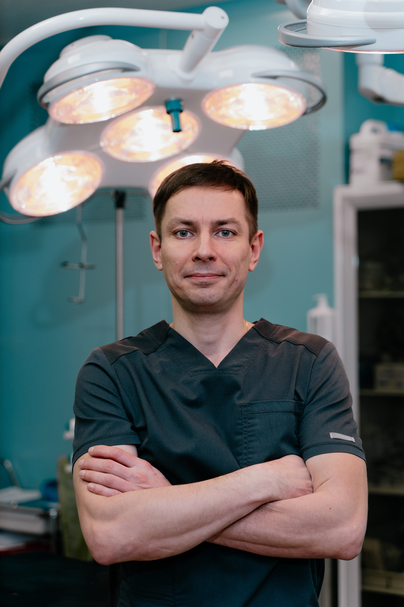
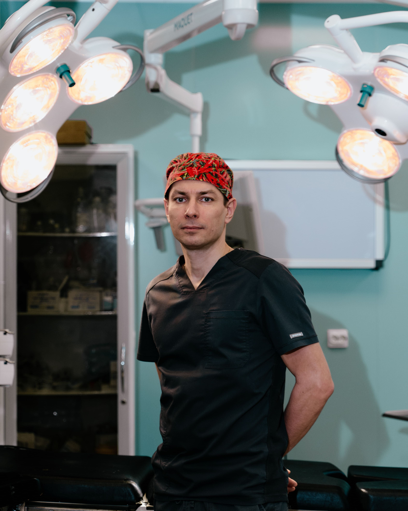
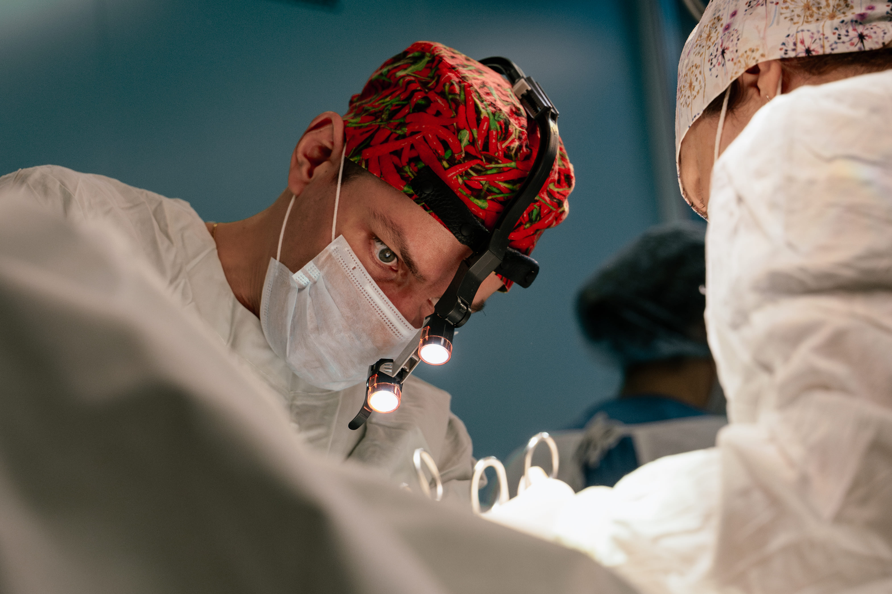
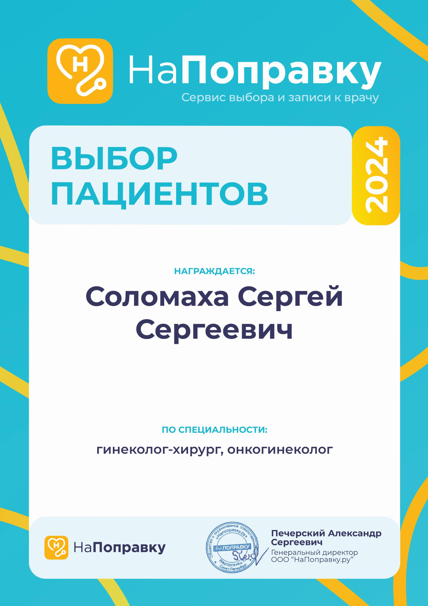
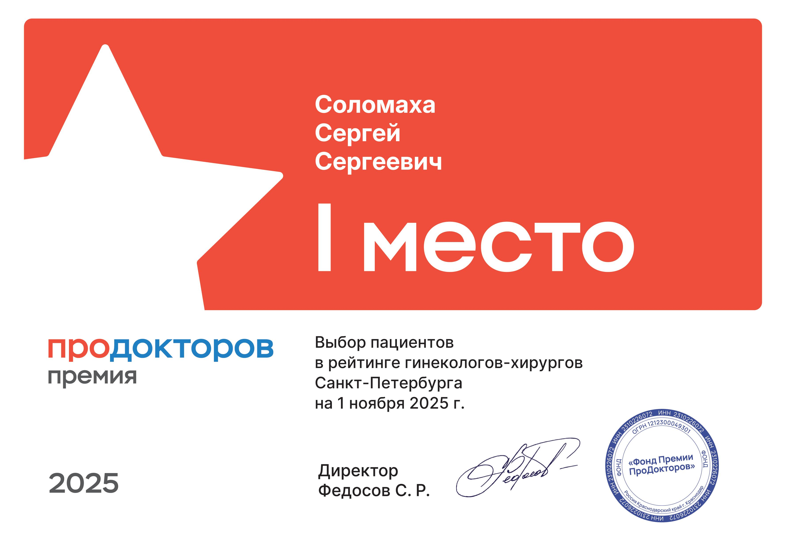

Хирург-гинеколог • Онколог • Санкт-Петербург
Выбор хирурга — сложная задача.
Моя задача — ваше спокойствие,
уверенность, эстетика и качество жизни.
Определенность в деталях.
Ваш хирург. Ваш результат.

Безопасность в хирургии,
многокомпонентное обезболивание,
Ваше спокойствие перед операцией и полное понимание этапов лечения — моя главная цель.



Если вам отказали в операции, не предложили альтернатив или вели себя нетактично — приходите за консультацией. Здоровье — Ваш главный ресурс!
Написать в Telegram